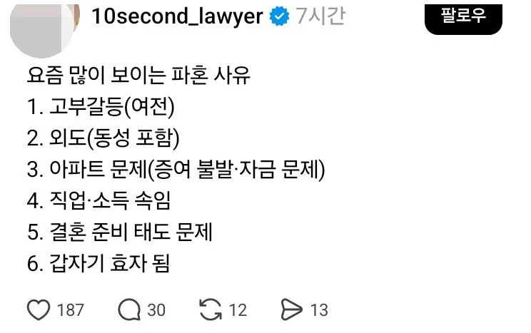

동성?

동성?
배동성: ㅇㄱㄹㅇ
김동성도 좋아
실제로 와이프 여자랑 바람났다고 하소연하는걸 직접 들어봐서..
갑자기 효자 됨이 저항없이 터지네
갑자기 효자는 뭐임?
효자는 결혼하면 안되남
효녀는 괜찮은거냐?ㅋㅋㅋ
효자=남녀포함
평소엔 챙기지도 않다가 배우자에게 자신의 부모님 안챙긴다고 뭐라하는 경우 말하는듯
연애할때는 평소 챙기지도 않던 사람이 결혼하니까 돌변해서 자꾸 부모님 편의 봐주는 쪽으로 가는 경우지 ㅋㅋ
나같은 경우는 애키우면서 아고 우리엄마도 날 볼때 이랫겟지 싶은 생각에 자꾸 엄마랑 통화하고싶어지더라 ㅋㅋㅋ
원래부터 결혼하기 싫은 순위에 효자 효녀 있었음.
결혼했는데 자기 가정보다 처가 시댁 챙기면 마이너스지.
요즘은 결혼하면 그냥 다른 세대가 되는건데
여전히 나는 본가 소속이라고 믿고 거의 한달에 두번이상 갔다오는 사람을 효자,효녀라고 하더라
대부분의 배우자는 시댁,처가에 1년에
명절2번 + 생신2번 해서 4번만 가고싶어하거든
양가 부모님한테 잘하는 그런 효자 말고, 독립해서 가정을 일궜으면 자기 가정(나, 배우자 + 자식)을 1순위로 둬야하는데 그걸 못하고 자기 부모의 가정(부모, 나)을 1순위로 두는 사람이 있음. 이런 유형이 자기 부모의 가정에 배우자까지 포함시켜서 부모의 가정을 1순위로 여기기를 강요하는 경우가 많음.
파혼에 변호사가 왜 필요해?
그러게 나도 이거 댓글 쓸려고 했는데
파혼이면 기껏해야 식장 날리는정도지
좀 많이 나가면 아파트문제
근데 그마저도 자산분배 확실할텐데 왜지
아파트는 복잡할듯... 서로대출받고 그랬을테니까
증여받는다면 증여세도 둘이서감당했을수있고
복잡하긴할듯
아무리 요즘 시댁 안그런다 해도
역시나 여전히 고부갈등이 ㅋㅋㅋ
선임들이 여자는 효자 싫어한다길래 아니 그럼 효녀는 된대요? 하니깐 그냥 이해해라든데 ㅋㅋ
여자는 걍 내로남불이 패시브임
여성 친화 사회라 ㅋㅋ
이혼도 그냥 양측이 합의 하는 경우가 대부분이고
변호사 통해 소송해서 하는 경우도 20% 겨우 넘는데
파혼을 변호사 끼고 하는 경우가 몇이나 있다고
변호사 개업하고 단 한번도 접하지 못했을 파혼사례를
이러쿵 저렁쿵...
하여간 이빨까서 먹고사는 작업이라 구라는 잘치네
동성포함?